集成逻辑电路
约 2249 个字 30 张图片 预计阅读时间 7 分钟
概述
主要讨论集成组合逻辑器件和集成时序逻辑器件
侧重于集成芯片的介绍和应用
集成组合逻辑器件主要介绍中规模集成逻辑电路,功能比较完善,除了基本功能以外还具有控制,功能扩展等
集成编码器和译码器
CD4532:8线-3线优先译码器

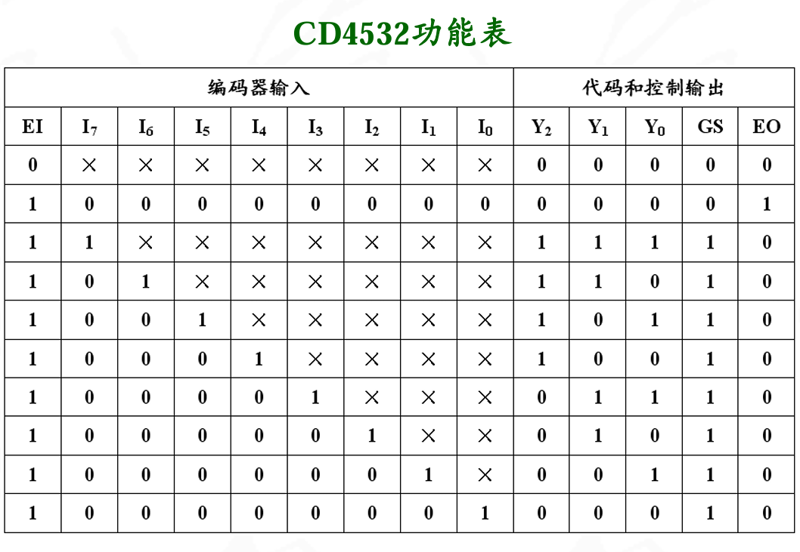
- 输入I7～I0为8个编码对象，Y2～Y0为编码后的3位代码输出.CD4532基本功能是8线-3线优先编码器，输出为原码输出，优先级为大数优先
- EI为该编码器的使能控制端,EI=1时使能编码器,EN=0时禁止编码器工作,输出0
- EO在EI=0,且无编码对象输入时输出1,EO与EI配合,实现多片编码器级联
- GS表示编码器处于工作状态。当EI=“1”，且有编码输入时才为1。用于区分编码器输出000的情况
功能扩展:用两片CD4532组成的16线-4线优先编码器
 当底下那一片没有输入的时候,就是顶上的那一片的EO输入1,开始工作
当底下那一片没有输入的时候,就是顶上的那一片的EO输入1,开始工作
74HC138：集成3线-8线译码器

- 3个输入，8个输出，低电平有效
- 3个使能端同时有效时，译码器才对输入译码
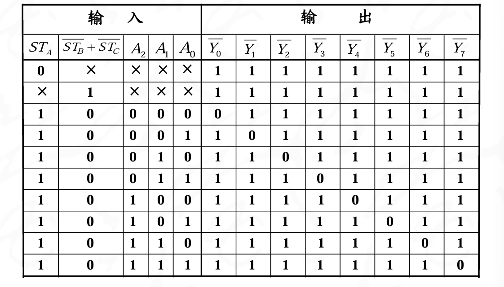
输出是低电平有效
功能扩展:用两片74HC138组成的4线-16线译码器

当A3A2A1A0为0000-0111时,需要前四位有效
当A3A2A1A0为1000-1111时,需要后四位有效
分界点在A3上,所以第2片SA接在A3,第一片not STB和not STC接在A3上
译码器应用2:实现组合逻辑电路
例题
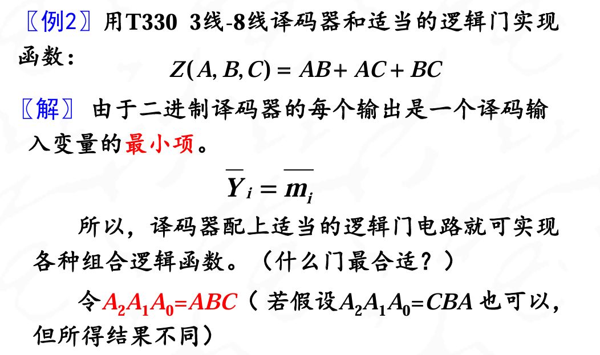

利用译码器的输出能转化为与或标准项的形式,再转化到输入项的方式可以很好的实现组合逻辑电路
例题

两个2线-4线译码器扩展成3线-8线译码器
最高项连在两个使能端,表示高低位的选择
例题

集成数据选择器和分配器
74HC153:集成数据选择器
74HC151:集成8选1数据选择器
具体还是看书本上的图吧
就是一种译码器,输入地址给出输出的数据通路,主要是译码器的数据输出不能选择,这个可以在D0-D8上自定义是高电平还是低电平
74HC153可以通过不同的使能端输入,变成一个8选1的数据选择器
解法
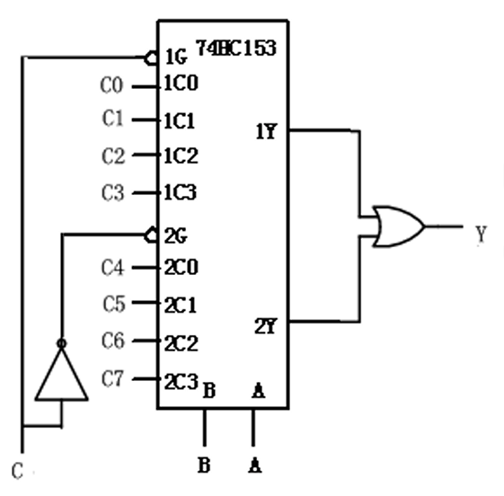
用4片74HC151八选一数据选择器和4片74HC253四选一数据选择器实现一个32选1的数据选择电路

选两次,一此是ABC选择哪一位,另外是DE选择哪一片
选择数据器应用2:实现组合逻辑函数:
数据选择器的输出函数式是与-或表达式,采用数据选择器能够实现各种组合逻辑电路
用一片74HC151八选一数据选择器实现函数:
解答
74HC151数据选择器的输出可以表示为:
Y=D0+D1+D2+D3+D4+D5+D6+D7
其中D0-D7表示输入信号,Y表示输出信号,+表示与
Z=M0+M1+M5+M6
所以D0 D1 D5 D6=1,D2 D3 D4 D7=0
得到电路图

产生序列脉冲
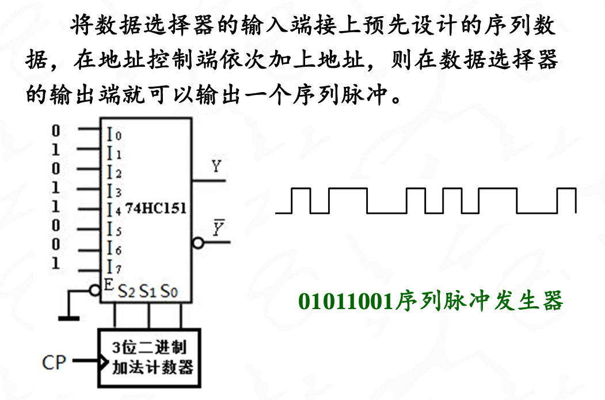
这个原理是这样的,CP作为时钟信号,过一个clk就在二进制加法器那边加上1,然后输入三位8421码到S2S1S0上,一个一个遍历I0-I7
在Y这里输出脉冲
集成加法器与数值比较器
874HC283:四位二进制加法器
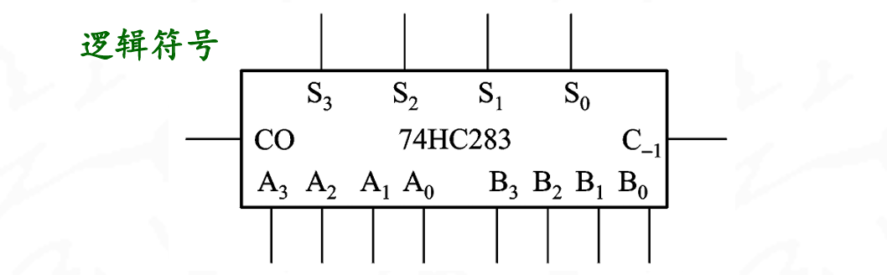
CO和C-1分别为进位输出和低位进位输入.
利用中规模二进制加法器，可以组成多种功能的逻辑电路
加法器的应用:
- 多位加法,这个很若只,第四位的CO接在高四位上,要是有进位就输出一个1
- 减法运算:
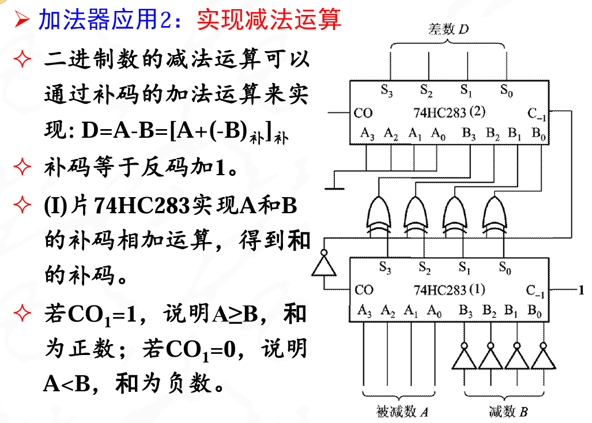
算出来的差数D是正常的表示
加法器应用3:实现代码转换
- 用一片74HC283将8421BCD码转化为余三码
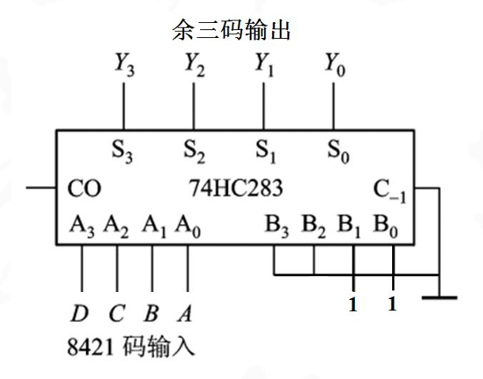
- 用一片74HC283和或非门将8421BCD码转化为2421BCD码
老老实实话真值表写卡诺图然后得到具体关系吧
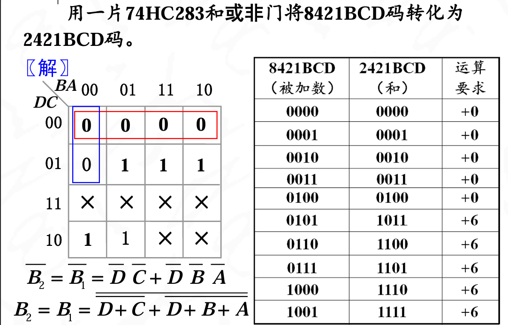
 这个+1表示的是运算要求要+6这个事件为真
这个+1表示的是运算要求要+6这个事件为真
数值比较器:
74HC85:四位数值比较器
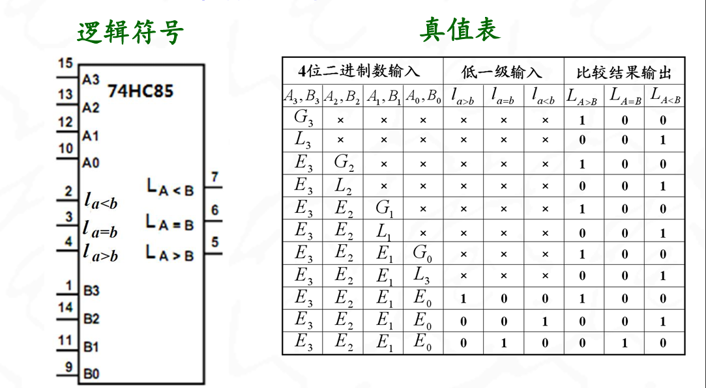
8位数字比较

集成时序逻辑器件
74HC175：集成4位数码寄存器:

上升沿寄存数:主要CP这里的判断

当S1第一个按下按钮的时候,G2变0,此时下降沿不会触发,直接关门不接受数据
74HC194：集成4位双向移位寄存器:
74HC194由4个RS触发器构成,MR为清零端,CP为上升沿起作用,S1S0为功能选择,DSL和DSR表示的是左移,右移之后的那个空出来的位置的电平高低

74HC595:移位+锁存+三态输出:
- SRCLR异步清零
- SRCLK移位时钟
- SER串行输入
- RCLK锁存时钟
- E三态输出控制
移位寄存器的应用举例:
- 数字延迟线:n位移位寄存器产生n-1个Tcp
- 循环序列脉冲:
- 环形计数器:寄存器型计数器
- 串入并出功能：发光管显示串行数据
集成计数器
主要要求能读懂真值（功能表）、引脚排列，就可以使用它
74HC163和74HC161：4位二进制加法计数器
满足某种条件时，立即将计数器或触发器的状态清零，而不需要等待时钟信号的到来
74HC161是异步清零计数器，74HC163是同步清零计数器
如果用0110状态作为“反馈清零”控制，则当0110状态一出现，计数器状态就会立刻被清为0000，这使0110状态只出现短暂瞬间，计数器不是7进制，而是变成了6进制计数 因此在异步清除时，必须借助最大状态的下一个状态
555集成定时器
555是由模拟和数字电路巧妙结合在一起后形成的单片集成电路
该集成电路广泛地用在脉冲的产生、整形、定时和延时等方面
555电路结构


功能
- \(V_{TH}\):高触发端
- \(\(V_{TL}\)\):低触发端
- 3脚:输出端
- 7脚:放电端
- 4脚:低电平复位端
- 5脚:电压控制端

其中\(V_{TL}>\frac{1}{3}V_{DD}\)时,C2比较器输出位0,S=0
\(V_{TL}<\frac{1}{3}V_{DD}\)时,C2比较器输出位1,S=1
\(V_{TH}>\frac{2}{3}\)的时候,R=1;
\(V_{TH}<\frac{2}{3}\)的时候,R=0;
| R | S | Q |
|---|---|---|
| 0 | 0 | 保持 |
| 0 | 1 | 置1 |
| 1 | 0 | 置0 |
| 1 | 1 | 禁用 |
6脚是高触发端,作为复位端输入,在高电平有效
2脚是低触发端,作为置位端输入,低电平有效.2脚输入0的时候S内部为1,Q置1
6脚位为高电平的时候,把Q置为0
引脚5(电压控制端)连接电容作高频旁路用
555集成定时器的典型应用
- 构成多谐振荡器
多谐振荡器的特点,只要一合上电源,电路的输出就会在高电平和低电平两个状态之间进行自动的转换,产生前后沿都很陡的矩形波
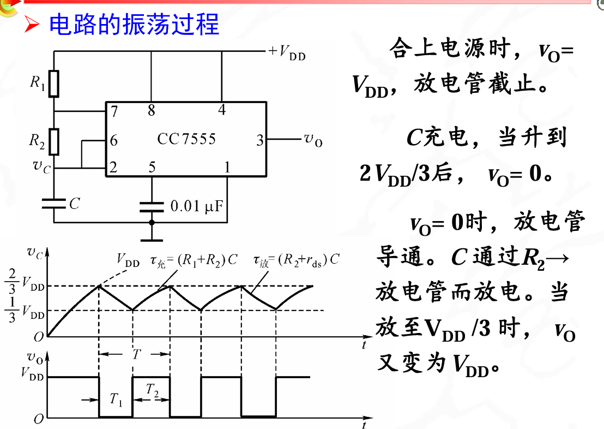
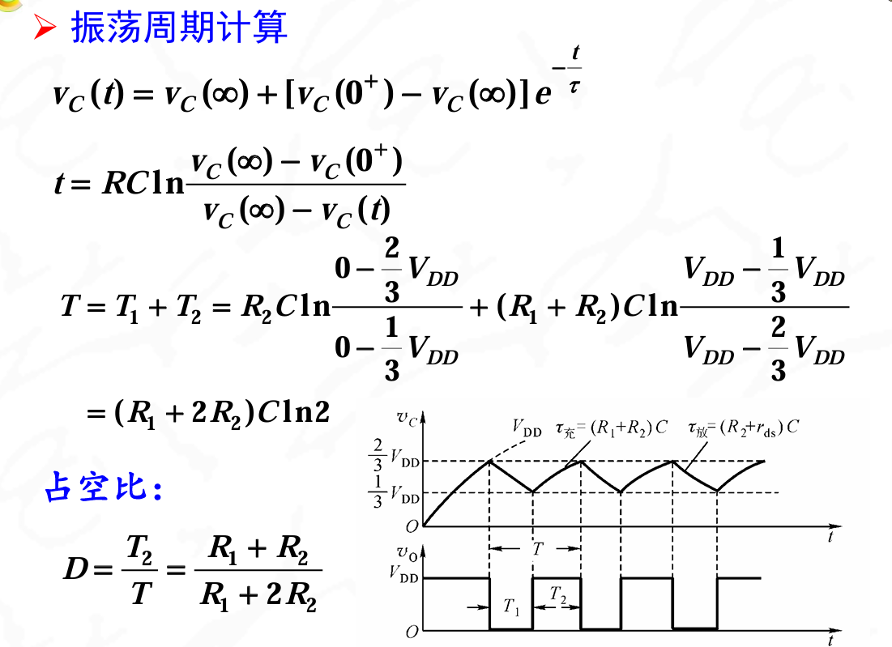
充电的t=(R1+R2)C,放电的t=R2C
555的第5引脚（即参考电压控制端）加 上控制电压VC，使比较器的基准电压可调
可以在555的第4引脚（即复位端）加调制信号， 当调制信号高电平时，电路产生高频振荡，调制信 号低电平时，不振荡，输出低电平。
占空比可调的多谐振荡器:改变R1R2
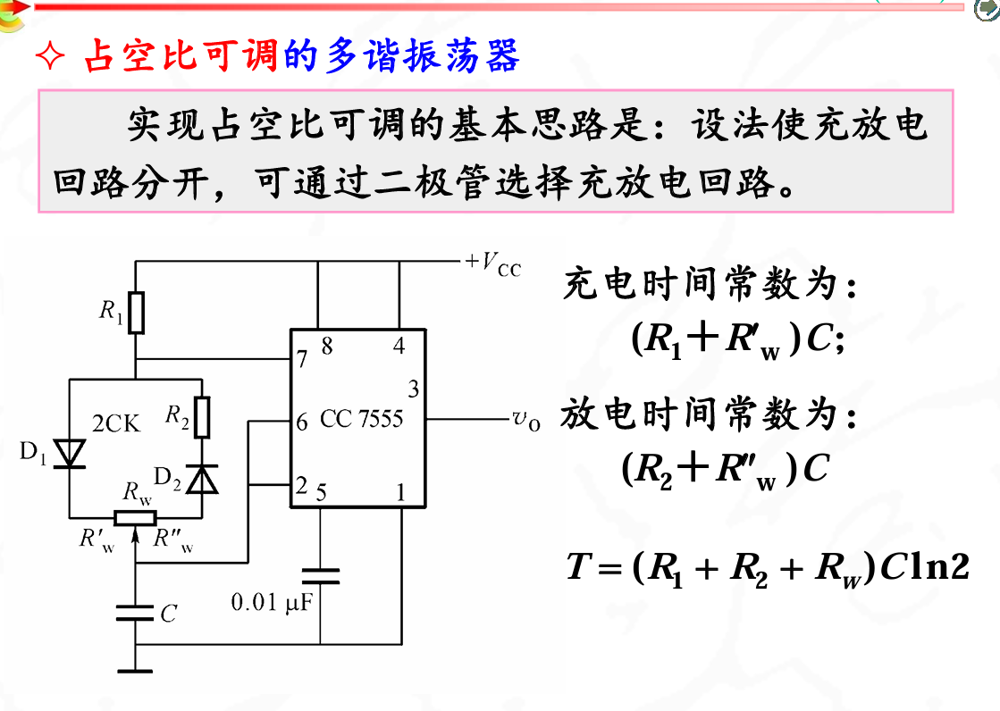
ROM/ram
存储体或RAM的容量表示为字数×位数
一个10位地址的RAM,共有2^{10}个存储单元
若每个存储单元存放一位二进制信息，则该RAM的容量就 是210×1=1024字位
重点在容量扩展:
地址线扩展、数据线扩展、两者同时扩展的方法加以解决
- 地址线扩展:位扩展
将用RAM2114扩展成1024×8 字位(8K字位)
地址线位10条不变,数据线从4-8条.因此需要1024*8/(1024*4) 2片,分别承接高低位
- 字扩展:地址线扩展
将RAM2114扩展成2048×4 字位(8K字位)
地址线从10条扩展为11条,数据线不变
(2048×4) / (1024×4 )=2片
控制地址变化.
- 字位扩展
用RAM2114扩展成4096×8 字位(32K字位)。
地址线从10条扩展为12条（212＝4096）。数据线从4条扩展为8条。需(4096×8) / (1024×4 )=8片RAM2114。